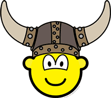

Jag heter Rune Körnefors och arbetar som universitetsadjunkt i ämnet Medieteknik vid Linnéuniversitetet i Kalmar och Växjö. Mitt specialområde är webbteknik på klientsidan, vilket innefattar webbdesign med främst HTML, CSS och JavaScript.
Medieteknik
Under 1980-talet arbetade jag som lärare i digital- och mikrodatorteknik vid dåvarande Högskolan i Växjö. Jag och ett par kollegor började experimentera med användning av datorstött lärande och utvecklade läromedel med multimedia för våra kurser. Då använde vi olika s.k. författarverktyg, bl.a. HyperCard och utvecklade interaktivt, multimedialt kursmaterial som vi kallade hyperböcker. Detta var innan webben kom, så då låg det endast lokalt på användarens dator, på disketter eller CD-ROM. Under 1990-talet kom webben och vi började då använda det för distribution av kursmaterial. Samtidigt deltog vi i flera nationella och internationella projekt för utveckling av datorstött lärande inom distansutbildning.
Mitt intresse övergick mer och mer till att handla om multimedia, hypermedia och datorstött lärande. Jag och min kollega Lennart Lundberg började utveckla kurser i detta område i början av 1990-talet och 1995 grundade vi ämnet Mediateknologi vid Högskolan i Växjö. Ämnet hade då också börjat utformas vid en del utländska univeristet och låg där inom området "Art and design". Vi hade dock en teknisk bakgrund från att ha arbetat med hårdvaran i datorer och hade ett mer tekniskt perspektiv på ämnet. Vi samarbetade dock med många andra ämnen, såsom pedagogik, kognitionsvetenskap, medie- och kommunikationsvetenskap samt dataolgi och informatik, så ämnet utvecklades till ett tvärvetenskapligt ämne.
I början av 2000-talet hade ämnet vuxit och vi gav flera kurser och hade även forskning inom ämnet. Då Högskolan i Växjö blev universitet, bytte vi också namn på ämnet till Medieteknik. Då hade även ämnet inrättats på en del andra lärosäten i Sverige med detta namn. Ämnets innehåll och inriktning varierar dock en del mellan olika lärosäten, men är i Sverige huvudsakligen ett tekniskt ämne som ligger under en teknisk fakultet.
Under 2000-talets två första årtionden har jag arbetat en del med utveckling av ämnet vid Växjö univeristet och sedan Linnéuniversitetet, då Växjö univeristet och Högskolan i Kalmar slogs ihop 2010. Jag har i olika perioder varit studierektor och chef för avdelningen för medieteknik. Samtidigt har jag utvecklat mitt intresse för webbteknik och undervisning i det.
Webbteknik
Numera ägnar jag mig nästan enbart åt undervisning i webbteknik och då klientbaserad webbteknik. Det handlar alltså om teknik och språk som används i användarens dator, på klientsidan.
De kurser jag ger är Webbteknik 1, Webbteknik 2 och Webbteknik 3. Samtliga kurser är nätbaserade med en egen webbplats, där det mesta av kursmaterialet finns. Kurserna ges både för studenter på campus och på distans.
Denna webbplats
På denna webbplats samlar jag webbplatserna för kurserna och annat material inom webbteknik. För att ha full kontroll över materialet, har jag lagt det i min egen domän.
Varför enur.se?
Då jag skulle registrera ett domännamn för webbplatsen hade jag bestämt mig för ett kort namn i se-domänen. Namn som webbteknik, webtek, wt, etc. var redan upptagna. Även mitt eget namn rune och olika varianter på initialer som rk och rks var också upptagna. Men enur.se var ledigt, så då fick det bli det.
Dessutom har jag alltid gillat mitt namn baklänges, Enur Srofenrök, ett riktigt vikinganamn 